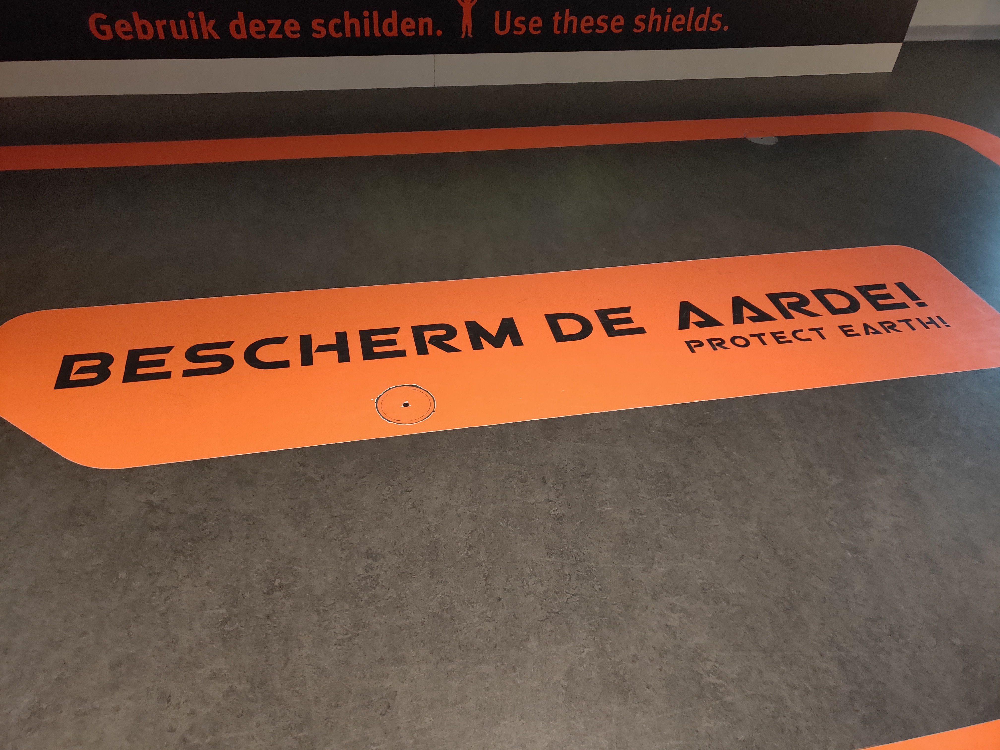
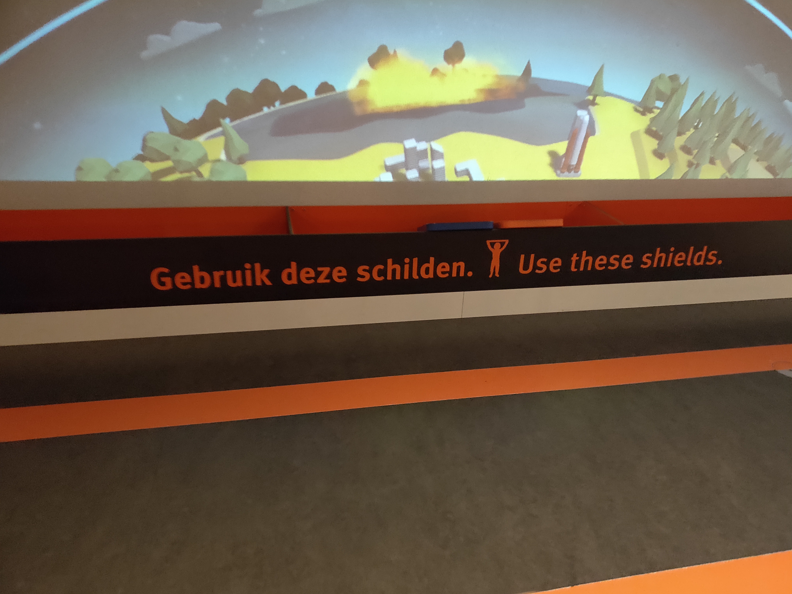
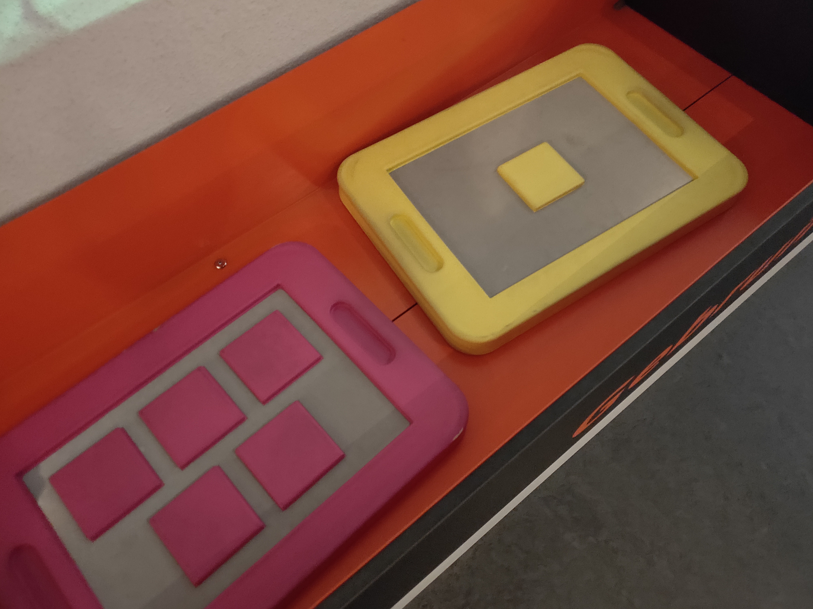
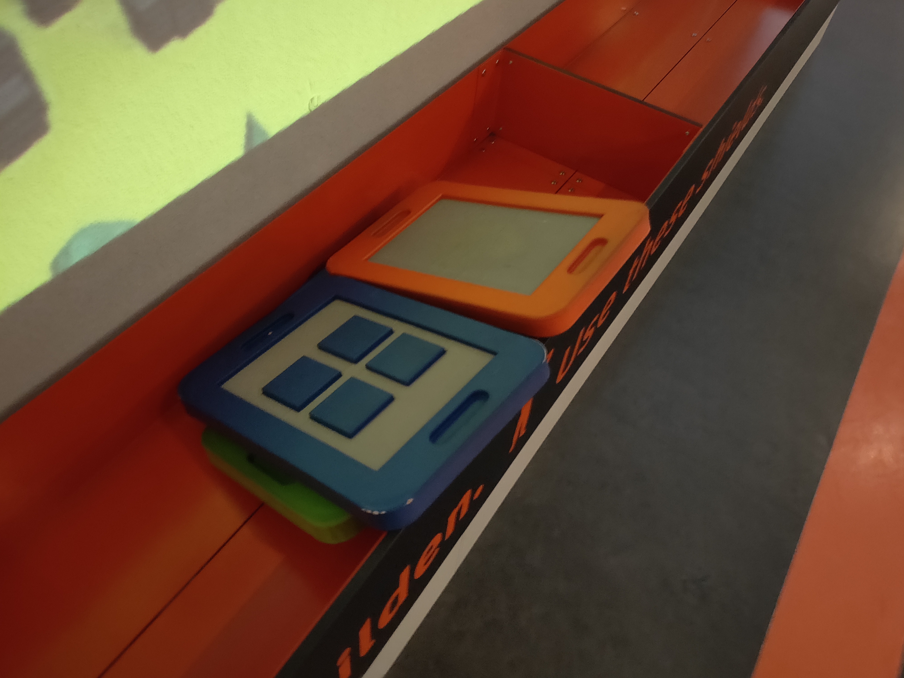
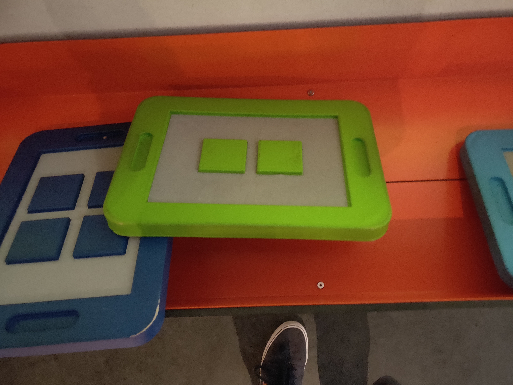
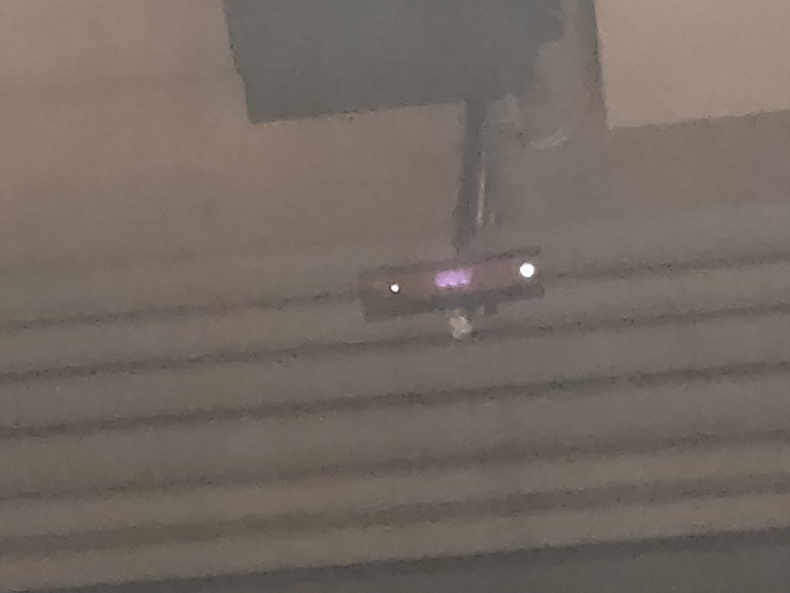
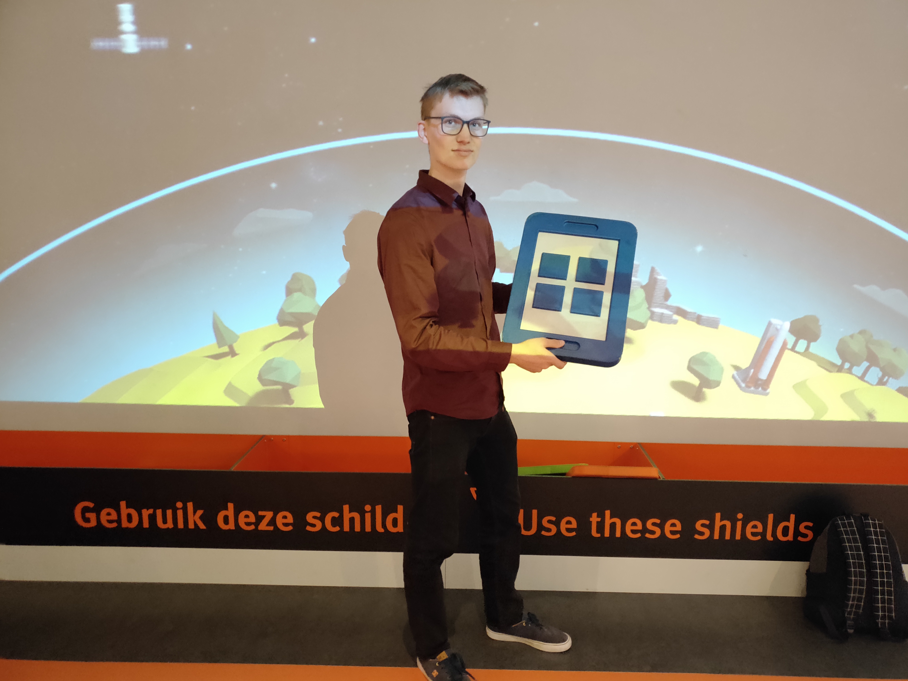

During this course we would have a field trip to a relevant location. We went to the NEMO Science Museum in Amsterdam. Our school had a little more budget because they won price money. I already had been to NEMO as a kid a couple of times but I was interested to see if there were new installations and to see how they work. We weren’t the target group, but could be the people designing the installations in NEMO. So we went in openminded and I tried not to bother children playing with installations.
Assignments
We weren’t just going to NEMO for fun. We went there with an assignment. I was supposed to find a installation that I wound the most interesting. Unfortunately, not much had changed since I last went there as a kid. Being a lot taller didn’t help either because the whole museum looked a lot smaller. When I climbed the stairs to the second floor my I caught a new installation. It was some sort of Kinect based interactions were a lot of children were trying to save the earth from asteroids and crashing satellites. I liked how popular it was, all the children were very enthusiastically running around with the reflective boards on there heads.
After further inspecting the mechanics I noticed the infrared light of the Kinect on the ceiling. The boards that the children were supposed to hold had a reflective plane with unique patterns on it. So the Kinect could recognize each individual board and make the color match the one on the screen. The creators used computer vision to see the movement of the players and correlated there position on the x-axis to a place in the atmosphere on the screen. This reminded me of the time we played pong in the lecture from Danica Mast. Apart from the graphics I’m confident that I could recreate this installation if I took the time and had a height enough ceiling.
Selfie time

The area where the Kinect can sense the shields

Some simple instructions

Yellow and pink shields with different patterns

Blue and orange shields with different patterns

Green shield with different pattern

Terribly zoomed in picture of the Kinect

Picture by Lars Talsma; Me holding a blue shieldThe installation is action